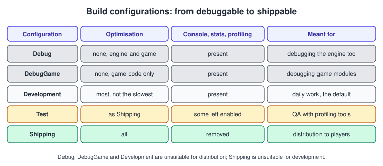
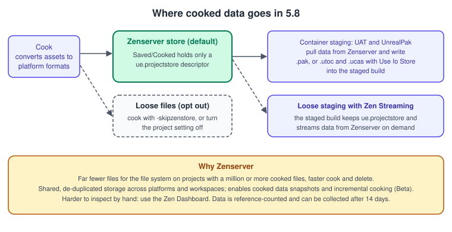
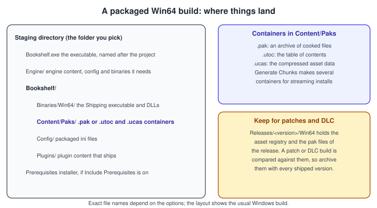
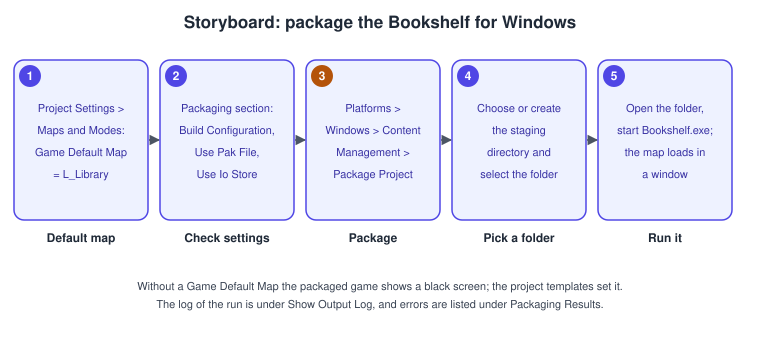

Packaging for Desktop
|
This content was generated with the assistance of AI and should be verified against the official documentation before being relied on in production. |
Everything you run in the editor depends on the editor: it reads uncooked assets in editor formats, compiles shaders on demand and carries the whole toolset. A game you hand to a player has none of that. Packaging is the process that turns a project into a standalone build: compile the game executable, cook the content into the platform’s formats, copy executables and content to a staging folder, and bundle them into the distributable form. This page covers desktop platforms (Windows first, with macOS and Linux notes); the mobile side is in Android and Mobile.
The facts on this page were checked in November 2026 against the Unreal Engine 5.8 documentation (5.8 was released on 2026-06-17, and the latest hotfix found is 5.8.4). The running example is the last desktop step of the Bookshelf: a Win64 Shipping build of L_Library. Packaging a C++ project needs the C++ toolchain: for 5.8 on Windows, Visual Studio 2026 18.0 or newer is recommended and Visual Studio 2022 17.14 is the minimum (VS 2019 is unsupported), the MSVC toolset minimum is 14.38 with 14.50 recommended, the Windows SDK minimum is 10.0.22621.0 with 10.0.26100 or newer recommended, and .NET 10.0 goes with VS 2026. On Windows the clang minimum is 18.1.8 and 20.1.8 is preferred. Epic’s recommended hardware is Windows 11, a quad-core 2.5 GHz or faster processor, 32 GB of memory, 8 GB of graphics memory and a DirectX 12 card. Installing the tools is covered in Installing and Building from Source; the module and target files are in Project Structure and Modules. A Blueprint-only project cannot use the DebugGame configuration.
The pipeline
Epic describes the stages as follows. Build compiles the executables for the selected platform. Cook converts content by running the engine in a special mode. Stage copies executables and content to a standalone staging directory. Package packages the project in the platform’s native distribution format. Deploy puts the build on a target device and Run starts it there. The tool that runs them in order is the BuildCookRun command of the Unreal Automation Tool (UAT); the editor’s Package Project menu entry, the Project Launcher and the command line are three front ends to it. Epic recommends generating a command line from a Custom Launch Profile in the Project Launcher, whose Output Log shows the resulting BuildCookRun arguments.
Targets and build configurations
A build is defined by two keywords. The target type says what kind of program it is; the configuration (the state) says how it is compiled. IDEs show them joined, for example Development Editor or Shipping.
| Target | Meaning |
|---|---|
Game |
A standalone executable. It requires cooked, platform-specific content. |
Editor |
Required to open the project in the editor and see code changes. |
Client |
A multiplayer client; valid only if a |
Server |
A multiplayer server; valid only if a |
Program |
A standalone tool built on the engine, not a game. |

| Configuration | Meaning |
|---|---|
Debug |
Engine and game code are built without optimizations: the easiest to debug and the slowest. Opening the project in the editor then requires the |
DebugGame |
Only game code is built without optimizations. Suited to debugging game modules. Not available for Blueprint-only projects. |
Development |
Most optimizations are enabled except the most time-consuming ones, with minimal debugging information. The editor’s default, and where code changes show in the editor. Unsuitable for distribution. |
Test |
The Shipping configuration with some console commands, stats and profiling tools still enabled, for internal QA. |
Shipping |
All optimizations; console commands, stats and profiling tools are removed. For distribution, unsuitable for development. |
Because Shipping has no in-game console, a shipped project must offer its own way to quit, such as a button, and any debugging you rely on must be reachable another way (logging to a file, a debug menu compiled out of Shipping). Code can test the configuration with the macros UE_BUILD_SHIPPING, UE_BUILD_TEST, UE_BUILD_DEVELOPMENT and WITH_EDITOR; editor-only code must be wrapped so the game module compiles without it, which is the most common reason a project that runs in the editor fails to package.
Source: Build Configurations Reference
The target file
// Source/Bookshelf.Target.cs (the Game target; BookshelfEditor.Target.cs is the Editor target)
using UnrealBuildTool;
using System.Collections.Generic;
public class BookshelfTarget : TargetRules
{
public BookshelfTarget(TargetInfo Target) : base(Target)
{
Type = TargetType.Game;
DefaultBuildSettings = BuildSettingsVersion.Latest;
IncludeOrderVersion = EngineIncludeOrderVersion.Latest;
ExtraModuleNames.Add("Bookshelf");
}
}// BookshelfPlayerController.h (the parts that matter for packaging)
UCLASS()
class BOOKSHELF_API ABookshelfPlayerController : public APlayerController
{
GENERATED_BODY()
public:
/** Called by the pause menu's Quit button; Shipping builds have no console to type "quit" into. */
UFUNCTION(BlueprintCallable, Category = "Bookshelf")
void QuitToDesktop();
/** Console command available in Development and Test builds only. */
UFUNCTION(Exec)
void BookshelfGiveAllBooks();
};// BookshelfPlayerController.cpp (the parts that matter for packaging)
#include "BookshelfPlayerController.h"
#include "Bookshelf.h"
#include "Kismet/KismetSystemLibrary.h"
void ABookshelfPlayerController::QuitToDesktop()
{
UKismetSystemLibrary::QuitGame(this, this, EQuitPreference::Quit, /*bIgnorePlatformRestrictions*/ false);
}
void ABookshelfPlayerController::BookshelfGiveAllBooks()
{
#if !UE_BUILD_SHIPPING
UE_LOG(LogBookshelf, Display, TEXT("Cheat: giving every book to %s"), *GetName());
// ... cheat implementation, compiled out of Shipping ...
#else
UE_LOG(LogBookshelf, Warning, TEXT("BookshelfGiveAllBooks is not available in Shipping."));
#endif
}Cooking
Assets in the editor are stored in the engine’s internal formats (the editor holds a texture as the imported PNG and a sound as the imported WAV). Cooking converts them to the formats the target platform wants, because a platform may use a proprietary format, may not support the engine’s format, or may have a more memory- or performance-efficient one. Cooking only includes what is referenced: it starts from the maps in the packaging list (and the project’s default maps) and follows hard references, plus soft references that are discovered, so an asset that nothing references is not cooked unless you ask for it.
The cook commandlet
# Cook for Windows from the command line (the commandlet; not the same as BuildCookRun)
UnrealEditor-Cmd.exe D:\Projects\Bookshelf\Bookshelf.uproject -run=cook -targetplatform=Windows -map=L_Library
# Start a cook server for cook on the fly, then point the game at it
UnrealEditor-Cmd.exe D:\Projects\Bookshelf\Bookshelf.uproject -run=cook -targetplatform=Windows -cookonthefly
Bookshelf.exe -filehostip=192.168.0.10Source: Cooking Content in Unreal Engine
-run=cook and -targetplatform are required. Epic’s cooking page gives the output location of the commandlet as <Game>/Saved/Sandboxes/Cooked-<Platform>; with the Zen store described below, the cooked folder of a platform holds only a descriptor. The options of the cook:
| Option | Meaning |
|---|---|
|
Cook everything, or only maps. |
|
Cook the listed maps, or all maps named in an ini section. |
|
Start the cooker as a server that waits for a game and serves cooked data on demand; the game runs with |
|
Cook only out-of-date items; without it everything is recooked. In the editor and Project Launcher this is the Iterative Cooking option, which Epic recommends enabling whenever possible. |
|
Exclude developer content, cook without package versions, compress packages, and skip editor content. |
|
Debugging switches that usually give incomplete cooks. |
|
DLC cooking against a released base. |
|
Run validators during the cook and optionally fail on errors. |
|
Memory use, config handling and diagnostics. |
|
Cook to loose files instead of to the Zen store. |
In the Project Launcher the two cook methods are By the Book (cook the platforms, cultures and maps you select) and On the Fly. Release builds use By the Book.
The Zen store and incremental cooking
In 5.8, Zenserver is the default cooked output store (it was off by default in 5.5, and projects that disabled the setting keep it disabled until changed). The cooked data then lives in the Zen Storage Server instead of as one file per asset, and Saved/Cooked/<Platform> holds only a small ue.projectstore descriptor that points to the data. The setting is Edit > Project Settings > Project > Packaging > Use Zenserver as cooked output store and it requires Use Io Store.

-
Pak and IoStore staging: UAT and UnrealPak pull data from Zenserver and write the same
.pak,.utocand.ucasoutput as before. Zenserver starts automatically if needed, and the staged build has noue.projectstore. -
Loose-file staging: the staged build omits the cooked data and keeps
ue.projectstore; the running game streams data from Zenserver on demand (Zen Streaming). -
Benefits: far fewer files for the file system on large projects (a million or more files), so cooking and deletion are faster; faster staging and deployment through Zen Streaming; shared, de-duplicated storage across platforms, projects and workspaces; and the base for cooked data snapshots and incremental cooks.
-
Costs: the data is harder to inspect (use the Zen Dashboard from the Derived Data button, and Tools > Launch Utility Command Prompt); cleanup is reference-based, so the data becomes eligible for garbage collection if
ue.projectstoreis deleted or its modification time is more than 14 days old; and the data location follows the Derived Data Cache path settings and can be overridden withUE-ZenDataPathor-ZenDataPath. Use a fast local drive, not a network or virtual drive.
Incremental Cooking (Beta in 5.8, with determinism improvements that reduce unnecessary recooking) compares asset changes against the output stored in Zen Server and cooks only what changed. Cooked data snapshots let a team import a build cooked elsewhere and cook local changes on top of it. The staging container files (pak and IoStore) remain supported for the non-iteration workflows.
Containers: pak and IoStore
A packaged game does not ship thousands of loose files. Use Pak File (enabled by default) puts all content into one or more .pak archives instead of many individual files. Use Io Store uses .utoc and .ucas container files instead, which is the loading path of the modern engine and is also required by the Zen option. Generate Chunks creates several containers so that assets can be assigned to chunks for streaming installs; assets are grouped with Primary Asset Labels that need a unique Chunk ID, and the chunking guide requires Use Pak File and Generate Chunks to be on. Create Compressed Cooked Packages (with Package Compression Format and Package Compression Method) reduces size at the cost of load work.

The Packaging project settings
Edit > Project Settings > Project > Packaging holds the options that every front end reads:
| Setting | What it does |
|---|---|
Build Configuration |
Debug, DebugGame, Development, Test or Shipping (default Development). |
Build Target |
The target to build (a Game, Client or Server target). |
Staging Directory |
The folder where the packaged project is copied. |
Full Rebuild |
Forces a full rebuild on every packaging run; off builds only modified files. Epic recommends full rebuilds when packaging, and incremental builds only while iterating on packaging itself. |
For Distribution |
On creates a Shipping-configuration distribution build (the page ties it to publishing to the App Store); off creates a Development build. |
Include Debug Files in Shipping Builds |
Includes debug files in staged Shipping builds. |
Use Pak File, Use Io Store, Use Zen Store |
Container format and the cooked output store, described above. |
Generate Chunks |
Generates chunks for streaming installs. |
Include Prerequisites Installer, Include App-Local Prerequisites |
Include an installer for redistributable OS components, or stage the prerequisites beside the executable (with an App-Local Prerequisites Directory for extra packages). |
List of Maps to Include in a Packaged Build |
Maps cooked when no map list is given on the command line. |
Additional Asset Directories to Cook |
Directories whose |
Create Compressed Cooked Packages |
Compression of cooked packages. |
Share Material Shader Code, Shared Material Native Libraries |
Store shader code once as individual files, or in the platform’s native library format; they reduce package size but may increase loading time. |
Exclude Editor Content When Cooking |
Skips content under |
The editor writes these settings to the project’s Config/DefaultGame.ini; commit the file so every team member and the build machine package the same way.
; Config/DefaultGame.ini (the editor writes this section; shown here so a build machine can be checked against it)
[/Script/UnrealEd.ProjectPackagingSettings]
BuildConfiguration=PPBC_Shipping
UsePakFile=True
+MapsToCook=(FilePath="/Game/Maps/L_Library")Procedure: package from the editor

-
Open Edit > Project Settings, go to Project > Maps & Modes, expand Default Maps and set Game Default Map to
L_Library. Without it the packaged project shows a black screen on launch; the project templates set it automatically. -
In Project Settings open Packaging, expand Project and confirm Build Configuration. Development is the default and is meant for testing; choose Shipping for a release.
-
In the main toolbar open the Platforms menu and select Windows. Under Binary Configuration confirm Use Project Setting. Under Content Management choose Package Project.
-
In the Package project dialog choose or create a staging directory, then click Select Folder.
-
Watch the Packaging project for Windows notification at the bottom right. Show Output Log opens the live log, and errors are listed under Packaging Results in the Message Log. Cancel stops the process.
-
Open the staging directory and run the executable named after the project. The pak files are in the project’s Content/Paks folder. In a Development build, press the backtick key to open the console and type
quit; a Shipping build has no console, so use the in-game Quit button.
Source: Packaging Your Project
Procedure: a Shipping release with the Project Launcher
-
Open the Project Launcher from the Platforms button on the editor toolbar and create a Custom Launch Profile; give it a name and a description.
-
Project: set it to the Bookshelf, or to Any Project.
-
Build: set the build configuration to Shipping. Optionally, under Advanced Settings, include UAT in the build.
-
Cook: choose By the Book; select the target platform, the cultures to cook localizations for and the maps to cook. Under Release/DLC/Patching Settings enable the release version option and enter a version number. Under Advanced Settings enable compressing content, saving packages without versions and storing all content in a single file, and set the cooker build configuration to Shipping.
-
Package: choose Package & store locally.
-
Deploy: choose Do not Deploy (the other methods are Copy to Device, File Server and Copy Repository).
-
Launch the profile and wait for building, cooking and packaging to finish. Save the asset registry and the pak files from
<Project>/Releases/<ReleaseVersion>/<Platform>: patches and DLC are compared against them. Test the build from the staging folder.
Procedure: package from the command line
Build machines run UAT directly. The script is RunUAT.bat on Windows and RunUAT.sh on macOS and Linux, in Engine/Build/BatchFiles. Epic’s page shows the shortest form, with -project and -clientconfig; the remaining switches below are the usual BuildCookRun ones, and RunUAT.bat BuildCookRun -help lists the full set for your engine version. The Project Launcher’s output log is the most reliable way to get the exact arguments for a given profile.
# Windows: build, cook, stage, package and archive a Shipping client
& "C:\UE\UE_5.8\Engine\Build\BatchFiles\RunUAT.bat" BuildCookRun `
-project="D:\Projects\Bookshelf\Bookshelf.uproject" `
-platform=Win64 -clientconfig=Shipping `
-build -cook -stage -pak -iostore -package `
-archive -archivedirectory="D:\Builds\Bookshelf" `
-unattended -utf8output# macOS or Linux: the same pipeline for the host platform (use -platform=Mac or -platform=Linux)
/opt/UE_5.8/Engine/Build/BatchFiles/RunUAT.sh BuildCookRun \
-project="$HOME/Projects/Bookshelf/Bookshelf.uproject" \
-platform=Linux -clientconfig=Shipping \
-build -cook -stage -pak -iostore -package \
-archive -archivedirectory="$HOME/Builds/Bookshelf" \
-unattended -utf8outputmacOS and Linux notes
-
macOS: the 5.8 release notes list Xcode 15.4 or newer for macOS builds, while the macOS development requirements page lists a higher minimum Xcode; check that page for your hotfix before choosing a version, since Epic also notes that some newer Xcode versions are not compatible. Intel Macs no longer have rendering support in 5.8. Signing and notarisation for distribution outside the Mac App Store are described in Signing, Capabilities and Configuration.
-
Linux: Epic recommends Ubuntu 22.04 or Rocky Linux 8 or newer for development with clang 20.1.8 and a v26 toolchain. Cross-compiling for Linux is supported from Windows only; on macOS compile natively. The native toolchain downloaded by
Setup.shuses a fixed sysroot, so a binary built on Ubuntu 22.04 can run on Rocky Linux 8. -
Server builds for either platform are a separate target and cook, as in Networking and Replication.
Release versions, patches and DLC
Pak and IoStore builds make later updates possible: a release version records the cooked content of a shipped build, and a patch is generated by comparing a new cook against that release. To make a patch, set Release Version This is Based On and tick Generate Patch; the engine compares all content after the cook with the originally released cooked content to decide what goes in the patch. DLC cooks use the fixed-base options in the table above. The release folder and asset registry saved at release time are therefore part of your deliverables, not build leftovers.
Verifying a packaged build
A build that was packaged without errors can still be wrong, so run a short checklist on every release candidate, on a machine that has never had the editor installed:
-
Start it from the staging or archive folder, not from the project folder, so that nothing is picked up from the editor’s content.
-
Check the first map. If the screen is black, the Game Default Map is missing or the map was not in the cook list.
-
Walk the Bookshelf. Every material, sound and Niagara system should be present; a missing one points to an asset that nothing referenced, so add its folder to Additional Asset Directories to Cook.
-
Check the configuration. In Shipping the console does not open and the stats and profiling commands are gone; in a Test build they are present, which is how you profile the shipped code.
-
Quit from the in-game button, since there is no console to type
quit. -
Read the log. A Development build writes warnings about missing assets and failed loads; fix them before cooking the Shipping build.
-
Repeat after changing the settings. Switching between pak and IoStore, or turning the Zen store on or off, changes what is staged, so test the build you will actually ship.
-
Archive the release folder with the asset registry and pak files before you move on.
For team workflows, the same steps run unattended on a build machine with BuildCookRun, and the packaged build is then the input of the automated tests described in Testing and Automation.
Common mistakes
-
Shipping a Development build. Development is the default and is unsuitable for distribution. Set Build Configuration to Shipping, or choose it in the launch profile.
-
A black screen on launch. Game Default Map is not set. Project templates set it; a new blank project may not.
-
Missing content in the build. The asset is referenced only by a string path, so the cooker never sees it. Add its folder to Additional Asset Directories to Cook, or reference it with a soft reference that the cook can discover.
-
Editor-only code in a game module. It compiles in the editor and fails when packaging. Wrap it in
WITH_EDITORor move it to an Editor module. -
No way to quit in Shipping. There is no console. Add a Quit button and test it.
-
Testing only in the editor. Packaged builds differ: cooked data, no editor assets, different config. Run the package on a clean machine.
-
Missing prerequisites on a clean machine. The game needs the redistributable runtime components. Turn on Include Prerequisites Installer or Include App-Local Prerequisites.
-
Packaging a server before cooking it. Running a server from the IDE without cooked content fails with a missing shaders error. Cook the Server build target first.
-
Throwing away the release folder. Without the saved asset registry and pak files, a patch cannot be generated against that release.
-
Moving the Zen store to a network drive. The store belongs on a fast local drive.
-
Forgetting the license. Shipping a product has royalty terms; see Versions, Licensing and History.
Performance notes
-
Iterate, then clean. Use iterative cooking and incremental builds while developing, and a full rebuild and a clean cook for release candidates, as Epic recommends for Full Rebuild.
-
Keep the Zen data local and fast. The cooked store is read and written constantly; an SSD makes the cook and the staging noticeably faster.
-
Compression trades size for load time. Compressed packages and shared material shader code reduce size and may increase loading time; measure on the slowest target hardware.
-
Cook only what ships. A small list of maps, Exclude Editor Content When Cooking and no test maps shorten cooks and builds.
-
Chunk large games. Generate chunks so that a streaming install can start with the first level while the rest downloads.
-
First cook is the slowest. Shader compilation and the Derived Data Cache dominate; share a DDC across the team and the build machines.
-
Measure the shipped build with the Test configuration, which keeps profiling tools, as described in Profiling and Optimization.
What changed recently
| Version | Change |
|---|---|
UE 5.5 |
Zenserver as a cooked output store is documented as opt-in, with a note that this is expected to change in future releases; Incremental Cooking is in Beta. |
UE 5.8 (2026-06-17) |
Zenserver as Cooked Output Store is enabled by default; staging into pak and IoStore containers remains supported for non-iteration workflows. Incremental Cooking continues as a Beta with determinism improvements. Visual Studio 2026 is recommended and Visual Studio 2022 17.14 is the minimum on Windows, with Windows SDK 10.0.22621.0 as the minimum. The default Windows audio backend is WASAPI. |
Source: Unreal Engine 5.8 Release Notes
Where the books are outdated
-
Blueprints Visual Scripting for Unreal Engine by Marcos Romero and Brenden Sewell (chapter 12) targets UE 4.20 to 4.22 and describes packaging from the UE4 editor; the Package Project entry is now under the Platforms menu, and the cook now goes through the Zen store by default.
-
Unreal Engine: Game Development from A to Z by Joanna Lee, John P. Doran and Nitish Misra (module 2-11) targets UE 4.7 to 4.10, before IoStore, Zenserver and Shipping-only builds without a console were the normal path.
-
Unreal Engine 5 Game Development with C++ Scripting by Zhenyu George Li and E. Wyn Roberts (chapter 12) targets UE 5.0 with Visual Studio 2022; for 5.8 use Visual Studio 2026 (2022 17.14 is the minimum) and note that Incremental Cooking and the Zen store arrived later.
-
Learning Unreal Engine Android Game Development by Nitish Misra (chapter 7) packages for Android with NDK r9c, NVPACK and APK uploads; the current Android toolchain, Android App Bundles and Google Play target level are in Android and Mobile.
See also
-
Android and Mobile: the mobile half of packaging.
-
Project Structure and Modules: targets, modules and UBT.
-
Installing and Building from Source: toolchains per platform.
-
Networking and Replication: dedicated server and client targets.
-
Profiling and Optimization: measuring the Test and Shipping builds.
-
Testing and Automation: running UAT and Gauntlet in CI.
-
Versions, Licensing and History: royalties and the version timeline.
-
Build Profiles and Platforms (Unity): the Unity counterpart.
-
Publishing on Google Play: the store side of a mobile release.
References
-
Unreal Engine: Using Zen Storage Server as Cooked Output Store
-
Packt: Blueprints Visual Scripting for Unreal Engine (Marcos Romero, Brenden Sewell)
-
Packt: Unreal Engine 5 Game Development with C++ Scripting (Zhenyu George Li, E. Wyn Roberts)